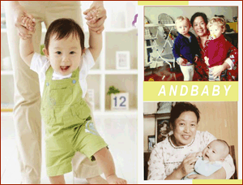

1、婴儿喂养：协助母乳喂养；冲调奶粉；针对性的给婴儿添加辅食；做富有营养的儿童餐，在适当的室温下给宝宝进行抚触。
2、起居照顾：带孩子睡觉；对婴幼儿的衣物、餐具进行清洗和打扫居室卫生。
3、早期教育：阅读图书并形象生动地给婴幼儿讲故事，唱儿歌；用普通话与婴幼儿进行日常的、积极的语言交流；根据儿童神经发育进程指导和选择玩具，与孩子一起游戏，进行潜能开发训练。
4、行为培养：培养孩子良好的生活习惯（大小便、卫生、吃饭等）；锻炼孩子与外界交流；
2、起居照顾：带孩子睡觉；对婴幼儿的衣物、餐具进行清洗和打扫居室卫生。
3、早期教育：阅读图书并形象生动地给婴幼儿讲故事，唱儿歌；用普通话与婴幼儿进行日常的、积极的语言交流；根据儿童神经发育进程指导和选择玩具，与孩子一起游戏，进行潜能开发训练。
4、行为培养：培养孩子良好的生活习惯（大小便、卫生、吃饭等）；锻炼孩子与外界交流；
由驻店高级育婴师上门为新爸爸和新妈妈提供宝宝的喂养、营养、保健、日常护理、教育、心理、意外伤害预防等全方位的专业指导。
育婴师（员）是国家劳动和社会保障部最新颁布的新兴职业，也就是我们常说的育儿嫂，但却是比育儿嫂更为专业。主要针对0-3岁婴幼儿进行生活护理及教育，其工作职能是指导婴幼儿家长及保姆科学喂养孩子，并根据婴幼儿发展水平制定个性化的教学计划。育婴师除了基本生活护理外，需要做到“针对婴儿需要选择常用消毒剂”、“针对不同情况的婴儿进行辅食添加”等，还要能够根据婴儿发展水平制定个别化教学计划，选择和设计游戏活动，锻炼孩子的大动作、精细动作、认知、语言、社会交往等各方面的能力，完成婴幼儿动作技能训练、智力开发、社会行为及人格培养等多方面的教育任务。
